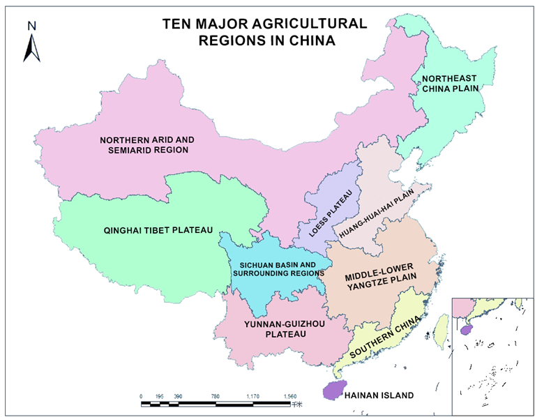
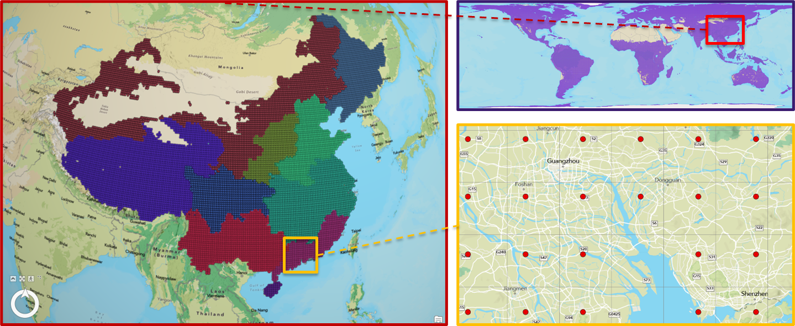
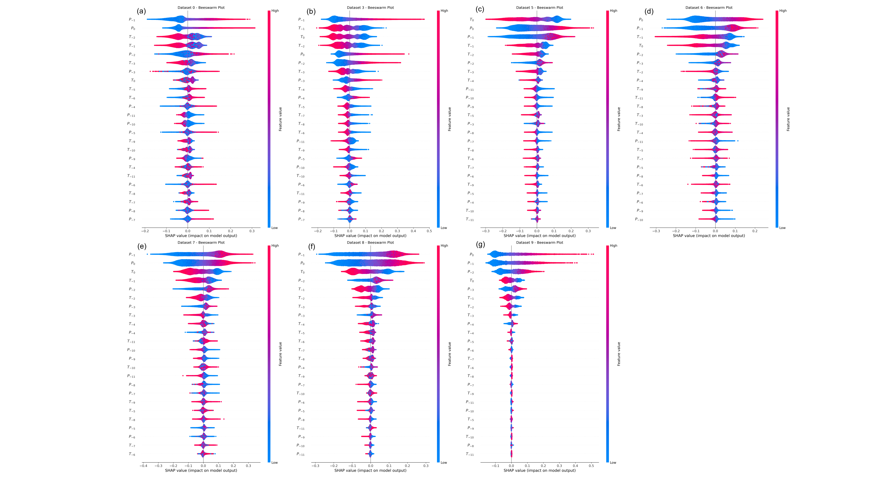

01 · Introduction
Background & Objectives
Machine learning models for environmental prediction often suffer from the "black box problem" — high accuracy without interpretability. This project applies Explainable AI (XAI) to bridge that gap in soil moisture prediction.
- Examine how precipitation and temperature influence soil moisture predictions using ML models (LSTM, XGBoost, Random Forest).
- Apply SHAP to interpret model decisions and quantify each variable's contribution to predicted soil moisture.
Soil Moisture
XAI / SHAP
Meteorological Drivers
02 · Data
Dataset
ERA5 monthly reanalysis (ECMWF): 888 months of global climate data, 1950–2023, at 0.25° spatial resolution.
Variables: Total Precipitation · 2m Air Temperature · Volumetric Soil Water (layers 1–3, combined to 1 m depth).
Study area: Agricultural regions of Mainland China — 10 sub-areas, 13,327 ERA5 grid cells. Missing cells excluded; values normalised via min–max.
ERA5 · 1950–2023 | 13,327 grid cells | 10 sub-areas
03b · XAI Method
SHAP Framework
SHAP is grounded in cooperative game theory (Shapley values). It allocates each input feature a contribution score such that the sum equals the difference between the model output and the baseline mean.
Beeswarm plots visualise feature importance: point colour encodes feature magnitude; spread reflects variability of impact. Features ordered top-to-bottom by overall importance.
TreeExplainer (RF, XGB)
GradientExplainer (LSTM)
02a · Study Area
Agricultural Regions of Mainland China & ERA5 Grid Coverage

Fig. 2.2 · Ten Main Agricultural Regions of Mainland China

Fig. 2.3 · ERA5 Grid Cells for All 10 Sub-areas (13,327 cells total)
03 · Methods
Machine Learning Models
Random Forest
Tree Ensemble
- 300 trees, max depth 10
- 6 sequential time steps
- Handles high-dimensional data
- Mitigates overfitting via bagging
- SHAP: TreeExplainer
XGBoost
Gradient Boosting
- 500 rounds, early stop ×20
- LR = 0.05, depth = 6
- 6 sequential time steps
- Captures nonlinear interactions
- SHAP: TreeExplainer
LSTM
Deep Learning
- LSTM → Dropout → Dense
- 4,513 trainable parameters
- 12 sequential time steps
- Captures long-term dependencies
- SHAP: GradientExplainer
Input: Precipitation (P) & Temperature (T) for preceding months → Target: Soil Moisture (SM₀). Train/Val split: 80/20 chronological. Evaluation metric: R².
04c · XAI Key Findings
SHAP Key Findings
Precipitation Dominance
Precipitation exerts greater influence on soil moisture than temperature across all models and most sub-areas.
Directional Effects
High P → strong positive effect; low P → pronounced negative. High T → substantial negative; low T → modest positive.
Temporal Decay
Recent time steps (P₀–P₋₄, T₀–T₋₄) consistently show greater influence than those farther back.
Lagged Effect
P₋₁ (one month prior) is the single most important feature — confirming a one-month precipitation lag.
04 · Results
Model Performance (R²) & SHAP Beeswarm — LSTM Models
04a · R² on Validation Sets
| ID | Region | RF | XGB | LSTM |
|---|
| 0 | Northeast China Plain | 0.411 | 0.467 | 0.506 ✓ |
| 1 | N. Arid & Semi-arid | 0.266 | 0.296 | 0.335 |
| 2 | Huang-Huai-Hai Plain | 0.249 | 0.318 | 0.377 |
| 3 | Loess Plateau | 0.531 ✓ | 0.589 ✓ | 0.600 ✓ |
| 4 | Qinghai-Tibet Plateau | 0.387 | 0.415 | 0.463 |
| 5 | Mid-lower Yangtze Plain | 0.597 ✓ | 0.633 ✓ | 0.663 ✓ |
| 6 | Sichuan Basin | 0.477 | 0.533 ✓ | 0.564 ✓ |
| 7 | Yunnan-Guizhou Plateau | 0.627 ✓ | 0.656 ✓ | 0.699 ✓ |
| 8 | Southern China | 0.629 ✓ | 0.651 ✓ | 0.649 ✓ |
| 9 | Hainan Island | 0.606 ✓ | 0.616 ✓ | 0.658 ✓ |
✓ = R² > 0.5 · Green = satisfactory · LSTM leads in 7/10 sub-areas · Poor in Sub-areas 1 (arid), 2, 4 (frozen soil)
04b · SHAP Beeswarm — LSTM (R² > 0.5)

Fig. 4.3 · SHAP Beeswarm for 7 LSTM Models · Features ordered by overall importance (top = most important)
05 · Conclusion
Conclusions & Limitations
Key Conclusions
- LSTM outperformed RF and XGB, achieving best R² in 7 out of 10 sub-areas.
- SHAP confirmed precipitation as the dominant driver of soil moisture across all models.
- A clear one-month lagged effect of precipitation on soil moisture was identified.
- SHAP successfully captured temporal dependencies — recent time steps carry greater weight.
Limitations & Future Work
- Poor model performance in arid (Sub-area 1), complex hydrology (Sub-area 2), and frozen-soil (Sub-area 4) regions.
- SHAP explanation inconsistencies across model architectures in some sub-areas (e.g., Sub-area 9).
- Only precipitation & temperature used — vegetation, evapotranspiration, groundwater excluded.
- Future: in-situ observations, broader variable set, improved LSTM architectures.